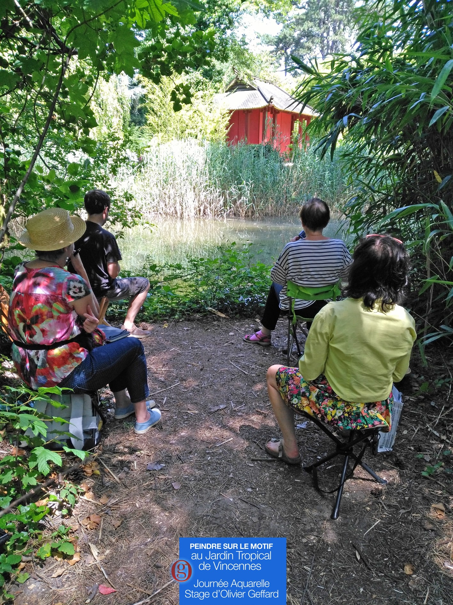

Les cours
GRATUIT :
Un cours de 2h
pour s’essayer à l’aquarelle.
OFFRE DECOUVERTE
Apprendre l'aquarelle c'est être libre de peindre sa vision,
libre de voyager avec son carnet et d'accéder au plaisir de peindre.
Les cours d'aquarelle sont basés à Ménilmontant.
Nous sommes en petit comité de 8 personnes au maximum..
Nous travaillons tous ensemble,
étape par étape d'après une base iconographique .
Aux beaux jours nous sortons sur le motif.
Vous apprendrez les astuces et les techniques,
comme le travail dans le sec et le mouillé, les glacis, le flouté,
placer les ombres et conserver la lumière, le proche et le lointain, le net et le flou...
Souvent je réalise devant vous une aquarelle du motif
pour vous expliquer les étapes et comment les réaliser.
La 1ere séance d’un nouvel élève sera de réaliser un petit exercice
pour acquérir les bases nécessaires à l’aquarelle :
mouvement et dosage du pinceau,
faire un aplat, réaliser un dégradé, flouter les bords,
placer des glacis et travailler dans le mouillé.
Pour ceux qui ne savent pas dessiner
j'ai mis une au point une technique
qui permet de copier le sujet facilement sans contrainte.
Les stages
Vous pouvez aussi participer à des stages en extérieur dans des endroits insolites comme le potager Caillebotte ou le jardin tropical de Vincennes (renseignement par simple demande )
